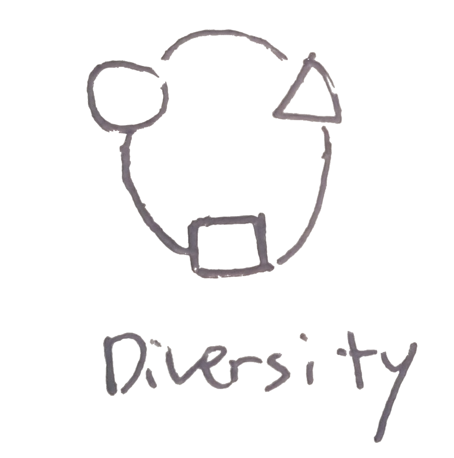
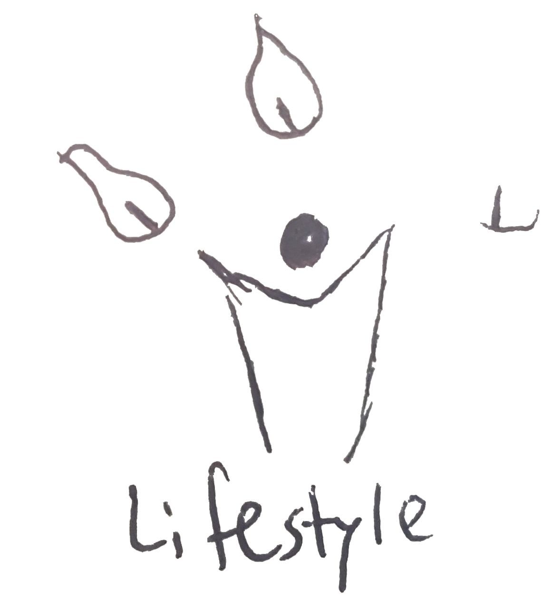
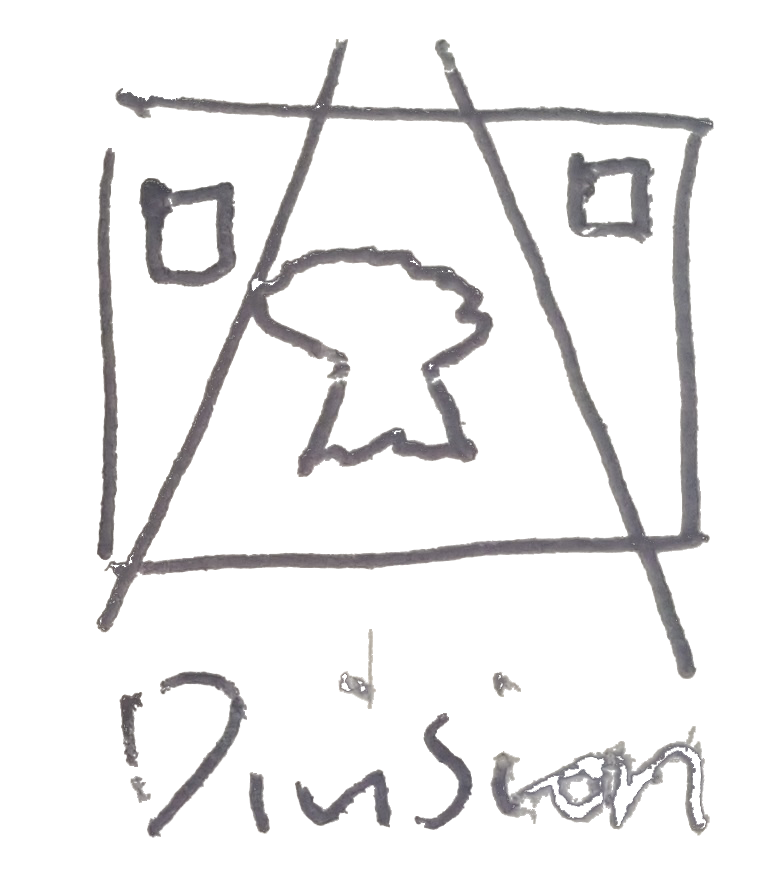

DEFINE URBAN TRANSFORMATION: Developing city into a better place through constructing infrastructure which results in diversifying people, expanding land, creating freshwater reservoir and etc.

Superkilen is a half a mile long urban space wedging through one of the most ethnically diverse and socially challenged neighborhoods in Denmark.
Key moves: Superkilen is a park that supports diversity. It is a world exhibition of furniture and everyday objects from all over the world, including benches, lampposts, trash cans and plants – requisites that every contemporary park should include and that the future visitors of the park have helped to select.
Superkilen is divided into three main areas: The Red Square, The Black Market and The Green Park. While The Red Square designates the modern, urban life with café, music and sports, The Black Square is the classic square with fountain and benches. The Green Park is a park for picnics, sports and walking the dog.


SUPERFLEX asked local residents to nominate specific urban objects encountered in either their country of national origin or in their travels abroad, including benches, bins, trees, playgrounds, manhole covers and signage. The nominated objects were either produced as a 1:1 scale copy or purchased and transported to the Superkilen.
By bringing their own souvenirs from different countries, the residents would know different cultures as they live in local. This is one of the ways to achieve urban transformation,as it helps to diversify people through contact with unique items.


| Analysis | Image | Intent | Success | Counterpart |
|---|---|---|---|---|
| Diversity |  | Iconic | Yes | Racists |
| Lifestyle |  | Provides home | Yes | Socially discouraged people | Division |  | Iconic | Yes | Laziness |